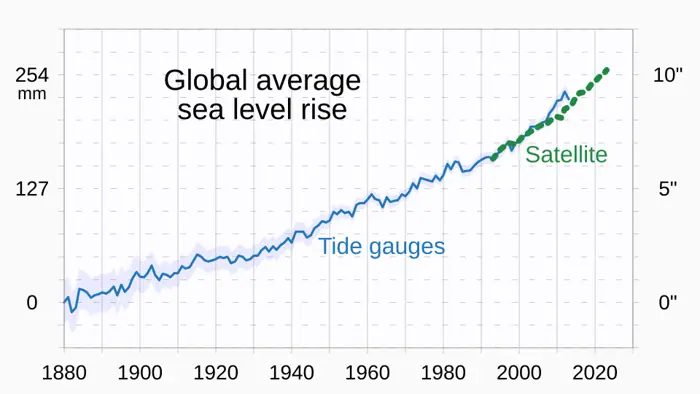

2026-10-03
10 stories archived for this date.

Satellites show Earth lost more than 12 trillion tons of ice from Greenland, Antarctica in 47 years
Satellites have counted the Earth’s ice melt like a death toll: more than 12 trillion tons have vanished from

Lawsuit says Anthropic, OpenAI, SpaceXAI and Google made illegal agreement on AI slowdown
<article> <strong>No Court Filing Yet: Unverified Antitrust Allegations Involving Anthropic, OpenAI, and Googl
Man who sprayed Minnesota Rep. Omar with vinegar sentenced to 14 months in prison

Ukraine deploys FP-7 tactical ballistic missile in combat for first time, Zelenskiy says
<strong>Ukraine Deploys ATACMS in Combat for First Time, Zelenskiy Says</strong> On 15 April 2024, President V
SpaceX’s supersized Starship launches into orbit for the first time but flight ends early

Stocks advance after Bessent says talks with China were successful before Trump
**Stocks rise on Tuesday after Bloomberg reports “successful” U.S.–China trade talks** The U.S. equity market
Scientists Detect Radio Signals from an Exoplanet for the First Time in History
<h1>Scientists Detect Radio Signals from an Exoplanet for the First Time in History</h1> <h2>What Happened</h2

Trump says his planned arch would become a ‘military complex’ able to host drones and snipers
Former President Donald Trump has long been associated with grand, often flamboyant construction projects that

DR Congo rolls out Ebola vaccine for health workers as death toll rises
<h2>DR Congo rolls out Ebola vaccine for health workers as death toll rises</h2> <p>In the eastern provinces o